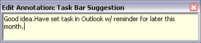

Using Annotations
Annotations are simply free-form textual notes that you can attach to any resource. Annotated resources display their Annotation text whenever you view them.
When you view items in the Items List, you can tell that an item has an annotation if it displays the Annotation icon in the Annotation column.
The Annotation column may not be displayed. If it is not, you can display it by clicking any column header in the Items List and choosing Configure Columns. Check the Annotation in the Resource List Columns dialog; you can optionally choose other options for displaying Annotations.
Annotating a Resource
To create an Annotation:
- Select the resource in the Items List.
- Right-click and choose Annotate Resource on the context menu or click in Annotation column in the Items List.
The Annotation Editor appears.
The Annotation Editor
- Type any text you want in the editor.
- Press Esc to preserve the Annotation. The Annotation icon appears in the Annotation column of the Items List indicating that the Annotation has been saved.
Accessing Annotated Resources
You can view the resources for which you have added some textual notes in the Annotated View of the Views and Categories pane. The Annotated View is available for each of the resource type tab.
Deleting an Annotation
To delete an Annotation, select the annotated resource in the Items List and choose Delete Annotation on its context menu.
Turning on and off Annotations Viewing
If you select the View Annotations command from the View menu, the Edit Annotation window is displayed whenever you select some annotated resource in the Items List. Turning this option on will allow you not to click the Annotation column or move the mouse pointer to the Annotation column every time you want to see the annotation text.
Deleting Several Annotations
To delete the annotations of several resources, select these resources in the Items List, then right-click and select Delete Annotation or from the Actions menu, choose Delete Annotation. Please note that this action is not available for viewing feeds and Clippings in “Newspaper” View.
Annotating Web Pages
You can now annotate the web pages using Omea Connector Plugin for Mozilla© for and Internet Explorer Add-on for Internet Explorer©. To annotate a web page, click the Annotate and Categorize button on the browser toolbar, type the annotation text and assign a Category for your web page. For details, see Working with Omea Connector Plugin and Working with Internet Explorer Add-on.
See also: